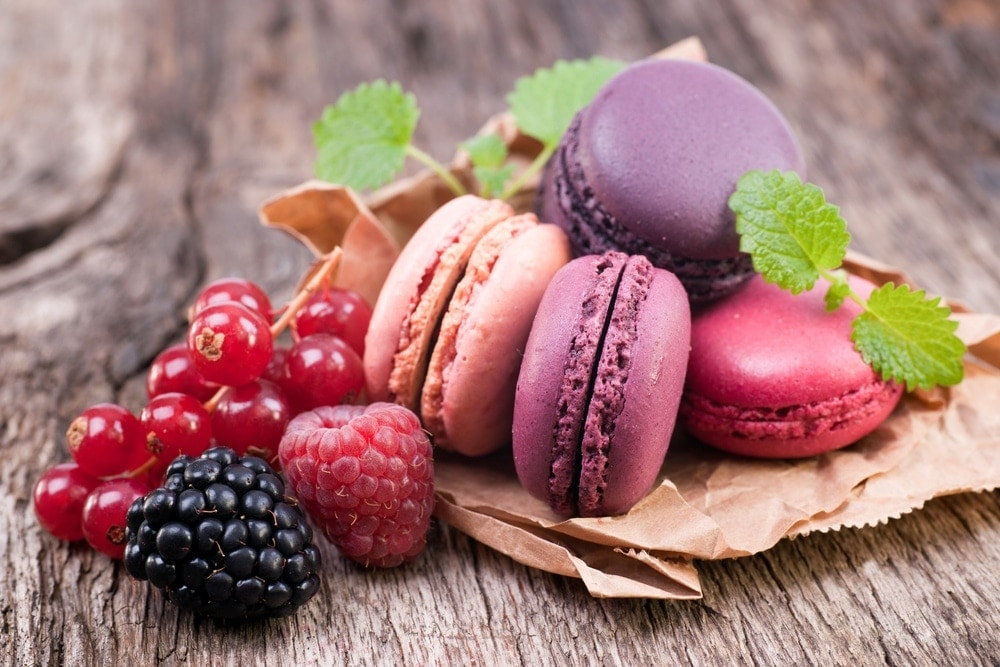

¿Quién se resiste a un dulce? Y lo que es más… ¿quién se resiste a un dulce casero? Desde que se popularizó el consumo de azúcar, los postres y dulces forman parte de las tradiciones gastronómicas de cada rincón del mundo.
Las tartas son las reinas de las ocasiones especiales, de ahí que las tartas de cumpleaños sean el elemento que no puede faltar para soplar las velas. La tarta de queso al horno, la tarta tres chocolates, las infinitas variedades de tarta de manzana o la tarta de galletas con chocolate son, por méritos propios, las más buscadas, preparadas y, cierto es, de las más sabrosas que existen.
